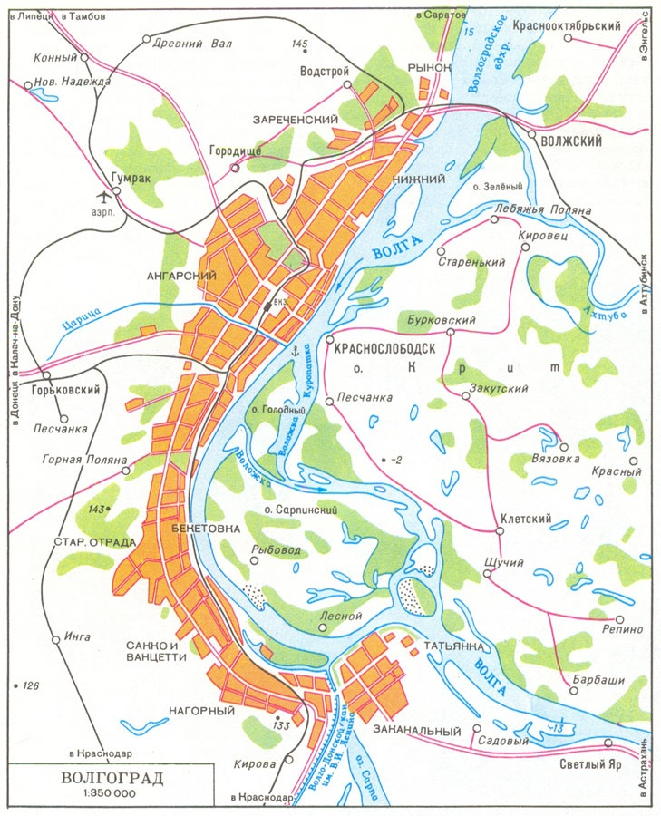

|

Географическое положение
С севера на юг и с запада на восток область протянулась более чем на 400 км. Общая протяжённость границ области — 2221,9 км, в том числе с Саратовской областью 29,9 %, Ростовской 26,8 %, Астраханской 11,4 %, Воронежской 11,3 % областями, Республикой Калмыкия 10,9 % и Казахстаном 9,7 %.
Волгоградская область имеет выгодное географическое положение, являясь главными воротами на юг России с выходом на Иран, Кавказ, Украину и Казахстан. В обратном направлении на центральную Россию и Поволжье. Также в области соединяются через Волго-Донской канал две важнейшие реки Европейской части России, Волга и Дон. С его помощью можно выйти на следующие моря: Каспийское море, Белое море, Балтийское море, Черное море и Азовское море.
Занимает площадь 112,9 тыс. км? (78 % составляют земли сельскохозяйственного назначения).
Климатические условия
Климат области засушливый, с резко выраженной континентальностью. Северо-западная часть находится в зоне лесостепи, восточная — в зоне полупустынь, приближаясь к настоящим пустыням. Средняя температура января от -8 до -12, июля от 23 до 25. Среднегодовое количество осадков выпадает на северо-западе до 500 мм, на юго-востоке — менее 300 мм. Абсолютный максимум тепла +42…+44 °C наблюдается обычно в июле — августе. Абсолютный минимум температуры воздуха составляет ?36… ?42 °C и наблюдается в январе — феврале.
Среднемноголетние сроки образования устойчивого снежного покрова в северных районах — 11—17 декабря, в южных — 20—25 декабря. Снежный покров сохраняется от 90 до 110 дней. Средние значения высоты снежного покрова колеблются от 13 до 22 см.
Зима в Волгоградской области, как правило, начинается в декабре и длится 70—90 дней. Весна обычно короткая, наступает в марте — апреле. В мае иногда бывают заморозки, нанося большой ущерб сельскохозяйственным культурам и плодоносящим садам. Лето устанавливается в мае, иногда в июне и продолжается около 3-х с половиной месяцев. Осень длится с конца сентября до начала декабря. В октябре иногда бывают заморозки.
|
 |
 ВОЛГОГРАД
ВОЛГОГРАД